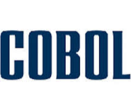
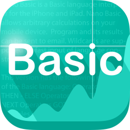
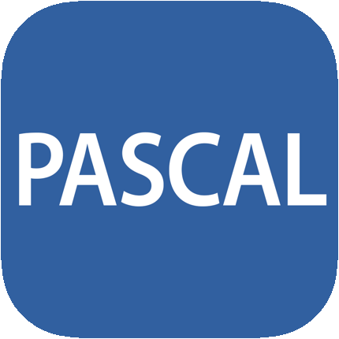
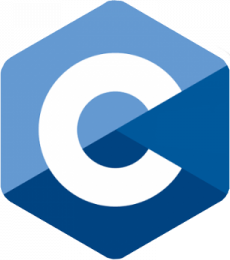
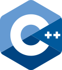
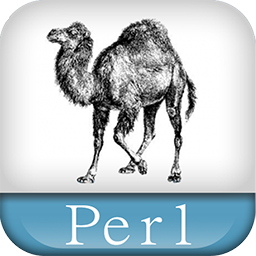
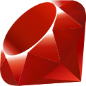
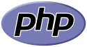
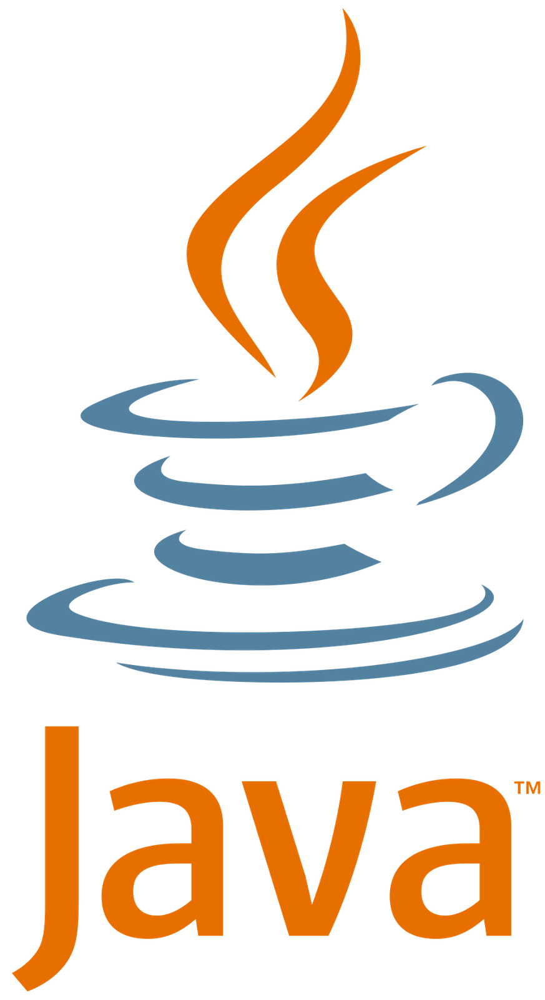

Programming languages
Home
Hall of Fame
Programming languages
Silicon valley
Gepubliceerd in: 1957
Fotran
Gemaakt door: John Backus en IBM.
De programmeertaal Fortran is de oudste programmeertaal en wordt nog steeds gebruikt.
Fortran is gericht op het uitvoeren van berekeningen met snelheid en nauwkeurigheid.
Gepubliceerd in: 1959

Cobol
Gemaakt door: Grace Hopper.
De programmeertaal Cobol is uit de jaren 60 die voornamelijk gebruikt wordt in zakelijke omgevingen.
Cobol is makkelijker te gebruiken en op meerdere typen computers inzetbaar.
Cobol is de afkorting van COmmon Business Oriented Language (algemene zakelijk georiënteerde taal).
Gepubliceerd in: 1964

Basic
Gemaakt door: John Kemeny en Thomas Kurtz.
De programmeertaal Basic is een eenvoudige programmeertaal die oorspronkelijk was bedoeld om mensen snel te leren programmeren.
Basic vertoont gelijkenis met Fortran.
Gepubliceerd in: 1970

Pascal
Gemaakt door: Niklaus Wirth.
In de programmeertaal Pascal wordt de nadruk gelegd op eenvoud, gestructureerd programmeren en datastructuren.
Het was de bedoeling dat Pascalprogramma's op een minicomputer konden worden gecompileerd en uitgevoerd.
In feite had Wirth al een soort personal computer voor ogen.
Gepubliceerd in: 1972

C
Gemaakt door: Dennis Ritchie en Bell Labs.
De programmeertaal C is oorspronkelijk gebaseerd op de programmeertaal B.
Die zelf weer op de programmeertaal BCPL was gebaseerd.
Het is een zeer praktische programmeertaal en wordt vaak gebruikt in besturingssystemen zoals Windows en Unix.
De invloed van C is zo groot dat sindsdien de meeste nieuwe programmeertalen zoals C++, Objective-C, Java, JavaScript, C# en PHP grotendeels de syntaxis van C gebruiken.
Gepubliceerd in: 1983

C++
Gemaakt door: Bjarne Stroustrup.
De programmertaal C++ is ontworpen door Bjarne Stroustrup voor AT&T Labs, als verbetering van C.
Met de naam wordt uitgedrukt dat de taal een verbetering is van C, zo sterk verbeterd dat C+ onvoldoende eer zou zijn.
Gepubliceerd in: 1987

Perl
Gemaakt door: Larry Wall.
De programmeertaal Perl is geschikt als vervanger van traditionele Unix-shell-scripts, die in sh (de Bourne shell) geschreven worden en daarbij allerlei andere utilities aanroepen zoals sed, tr, uniq, sart, expr en awk, Terwijl het ook alles kan waarvoor voordien een L programma geschreven moest worden.
De naam Perl is geen gewone afkorting, maar een backroniem, dat staat voor Practical Extraction and Report Language.
Gepubliceerd in: 1991
Python
Gemaakt door: Guido van Rossum.
De programmeertaal Python is mede gebaseerd op inzichten van professor Lambert Meertens die een op Basic gebaseerde taal genaamd ABC had ontworpen, maar dan met allerlei zeer geavanceerde datastructuren.
Inmiddels wordt de taal doorontwikkeld door een enthousiaste groep, tot juli 2018 geleid door Van Rossum.
Deze groep wordt ondersteund door vrijwilligers op het internet.
De ontwikkeling van Python wordt geleid door de Python Software Foundation.
Gepubliceerd in: 1993

Ruby
Gemaakt door: Yukihiro Matsumoto.
De programmeertaal Ruby is ontworpen om snel en makkelijk objectgeoriënteerd te programmeren.
Het heeft verschillende mogelijkheden om tekstbestanden te verwerken en kan ook systeemtaken aan.
Ruby wordt vaak vergeleken met Python en Perl.
Gepubliceerd in: 1994

PHP
Gemaakt door: Rasmus Lerdorf.
Aanvankelijk stonden de letters PHP voor Personal Home Page (de volledige naam was Personal Home Page/Forms Interpreter. PHP/FI).
Sinds PHP 3.0 is de betekenis een recursief acroniem geworden PHP: Hypertext Preprocessor.
Deze naam geeft aan waar de taal meestal voor gebruikt wordt: informatie verwerken tot hypertext (meestal HyperText Markup Language (HTML) en Extensible HyperText Markup Language (XHTML)).
Gepubliceerd in: 1995

Java
Gemaakt door: James Gosling.
De programmeertaal Java is een objectgeoriënteerde programmeertaal.
Java is een platformonafhankelijke taal die qua syntaxis grotendeels gebaseerd is op de programmeertaal C++.
Java beschikt echter over een uitgebreidere klassenbibliotheek dan C++.
Java ontstond begin jaren 90 in een klein dochterbedrijf van Sun Microsystems onder leiding van James Gosling.
Dat bedrijfje had als opdracht "Make something cool".
In de beginjaren richtte het bedrijfje zich op software voor settopboxen.
Gepubliceerd in: 1995
JavaScript
Gemaakt door: Brendan Eich.
De programmeertaal JavaScript is een veelgebruikte scripttaal om webpagina's interactief te maken en webapplicaties te ontwikkelen.
Naast HTML en CSS is JavaScript een van de kerntechnologieën van het wereldwijde web.
Toen JavaScript werd ontwikkeld was Netscape de webbrowser die door bijna iedereen werd gebruikt.
Het was nog niet eerder mogelijk om in ean webpagina code's op te nemen die door de browser wordt uitgevoerd.
Dat zogenoemde client-side scripting biedt enorm veel axtra mogelijkheden.
Gepubliceerd in: 2005
Ruby on Rails
Gemaakt door: David Heinemeier Hansson.
Ruby on Rails is een opensource-webapplicatieframework, geschreven in de programmeertaal Ruby.
Het volgt in grote lijnen het model-view-controller-model.
Het streeft naar eenvoud en staat het toe practische applicaties te ontwikkelen met minder code's en minder configuratie's dan andere raamwerken.
Ruby-programmeertaal geeft de mogelijkheid tot meta-programmeren waarvan Rails veel gebruik maakt.